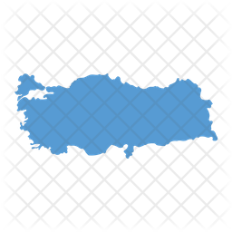
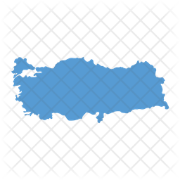
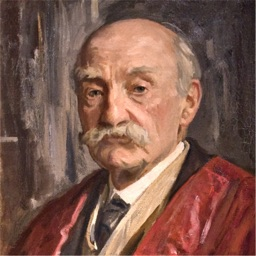
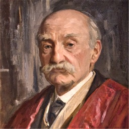
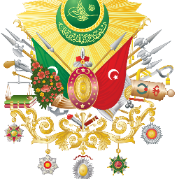
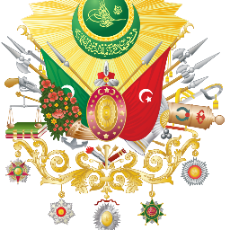

Turkey (Turkish: Türkiye [ˈtyɾcije]), officially the Republic of Turkey (Turkish: Türkiye Cumhuriyeti [ˈtyɾcije dʒumˈhuːɾijeti] (About this soundlisten)), is a transcontinental Eurasian country located mainly on the Anatolian peninsula in Western Asia, with a smaller portion on the Balkan peninsula in Southeastern Europe.
 

 

The English name of Turkey (from Medieval Latin Turchia/Turquia[36]) means "land of the Turks". Middle English usage of Turkye is evidenced in an early work by Chaucer called The Book of the Duchess (c. 1369). The phrase land of Torke is used in the 15th-century Digby Mysteries. Later usages can be found in the Dunbar poems, the 16th century Manipulus Vocabulorum ("Turkie, Tartaria") and Francis Bacon's Sylva Sylvarum (Turky). The modern spelling "Turkey" dates back to at least 1719.[37] The Turkish name Türkiye was adopted in 1923 under the influence of European usage.
 

The House of Seljuk originated from the Kınık branch of the Oghuz Turks who resided on the periphery of the Muslim world, in the Yabgu Khaganate of the Oğuz confederacy, to the north of the Caspian and Aral Seas, in the 9th century.[62] In the 10th century, the Seljuks started migrating from their ancestral homeland into Persia, which became the administrative core of the Great Seljuk Empire, after its foundation by Tughril.[63] In the latter half of the 11th century, the Seljuk Turks began penetrating into medieval Armenia and the eastern regions of Anatolia. In 1071, the Seljuks defeated the Byzantines at the Battle of Manzikert, starting the Turkification process in the area; the Turkish language and Islam were introduced to Armenia and Anatolia, gradually spreading throughout the region. The slow transition from a predominantly Christian and Greek-speaking Anatolia to a predominantly Muslim and Turkish-speaking one was underway. The Mevlevi Order of dervishes, which was established in Konya during the 13th century by Sufi poet Celaleddin Rumi, played a significant role in the Islamization of the diverse people of Anatolia who had previously been Hellenized.[64][65] Thus, alongside the Turkification of the territory, the culturally Persianized Seljuks set the basis for a Turko-Persian principal culture in Anatolia,[66] which their eventual successors, the Ottomans, would take over.[67][68] Topkapı and Dolmabahçe palaces were the primary residences of the Ottoman Sultans and the administrative centre of the empire between 1465 to 1856[69] and 1856 to 1922,[70] respectively. In 1243, the Seljuk armies were defeated by the Mongols at the Battle of Köse Dağ, causing the Seljuk Empire's power to slowly disintegrate. In its wake, one of the Turkish principalities governed by Osman I would evolve over the next 200 years into the Ottoman Empire. The Ottomans completed their conquest of the Byzantine Empire by capturing its capital, Constantinople, in 1453: their commander thenceforth being known as Mehmed the Conqueror.